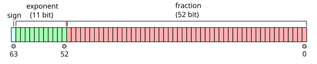

x <- .Machine$integer.max
x[1] 2147483647x + 1LWarning in x + 1L: NAs produced by integer overflow[1] NAHiroaki Yutani
October 21, 2024
Recently, I released a new version of savvy, a simple R extension interface using Rust, with improvement about a conversion to usize. I found some trickiness during implementing it, so I write a blog post.
.Machine$integer.max?As you know, R’s integer is 32-bit. A 32-bit singed integer can represent up to 2^31 - 1 (31-bit, becuase 1-bit is for the sign). If the number exceeds the range, NA_integer_ is returned.
[1] 2147483647Warning in x + 1L: NAs produced by integer overflow[1] NABut, you still can play with such a large number by treating it as numeric.
So, apparently, .Machine$integer.max is not the limit. A numeric can represent integer numbers to some extent. But, to what extent exactly? That’s the question.
In order to know the answer, we need to look at how a numeric is represented in memory. R’s numeric is a double-precision floating-point, which follows the IEEE 754 standard. The format is like this:

To get straight to the point, this can represent up to 2^53 - 1. The fraction part has 52-bit, plus the exponent part is used to represent 0, so 52 + 1 = 53. For more details, please refer to the Wikipedia article!
Okay, let’s confirm. 2^53 - 1 is 9007199254740991. If we add 1 to it, R can still do integer calculation correctly.
However, if we go further, R can no longer detect the difference of 1.
So, this is the limit. Up to 2^53 - 1, a numeric can safely represent an integer value.
To be clear, by “safely”, I don’t mean we can treat such an integer-ish numeric just the same as a usual integer. Integer arithmetic and floating-point arithmetic are different. But, still, this is a useful fact especially to those who write C/C++ or Rust-powered R packages.
In my case of the savvy Rust framework, this means savvy can safely accept integer-ish user input up to 2^53 and convert it to usize.
use savvy::{NumericScalar, Sexp, savvy};
#[savvy]
fn usize_to_string_scalar(x: NumericScalar) -> savvy::Result<Sexp> {
let x_usize = x.as_usize()?;
x_usize.to_string().try_into()
}usize_to_string_scalar(.Machine$integer.max + 1)
#> [1] "2147483648"
# 2^53 - 1 is okay
usize_to_string_scalar(9007199254740991)
#> [1] "9007199254740991"
# 2^53 is rejected
usize_to_string_scalar(9007199254740992)
#> Error: 9007199254740992.0 is out of range that can be safely converted to usizeSo, is 2^53 large enough? I’m not sure. It depends. You might want to use the bit64 package in the end. But, it’s a probably good news that we can live without bit64 to some extent.
By the way, it seems this is the strategy of JavaScript. Before BigInt, JavaScript uses that double-precision floating point both for integer number and floating point number.
{kind=link}